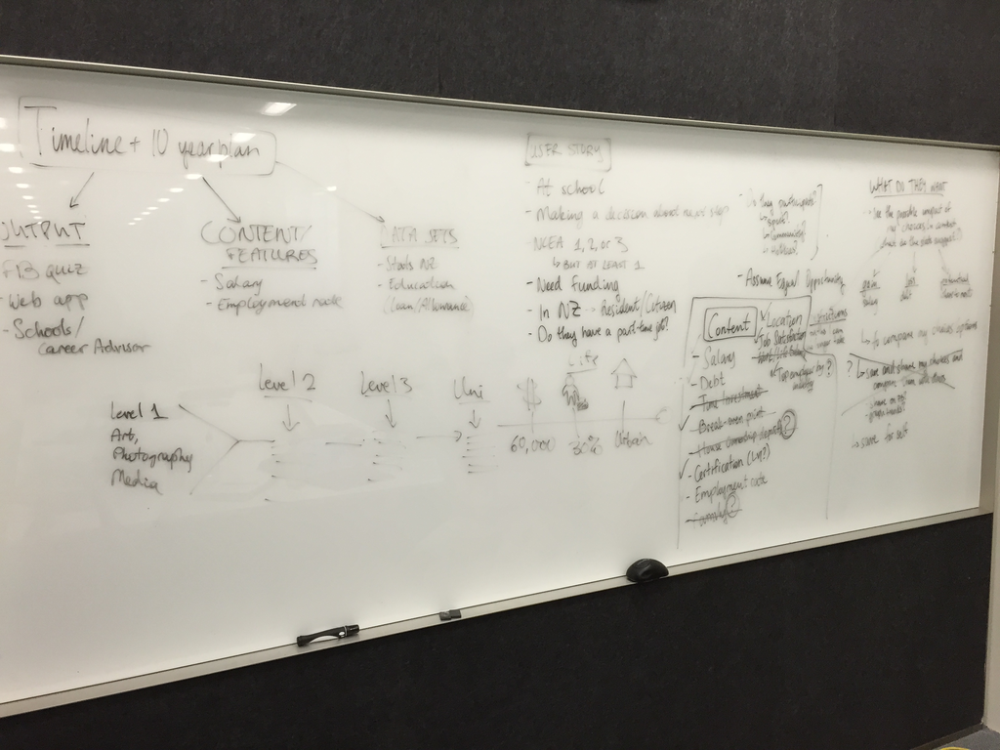
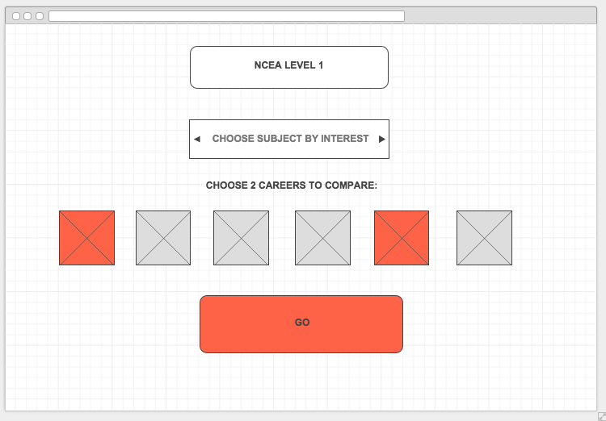
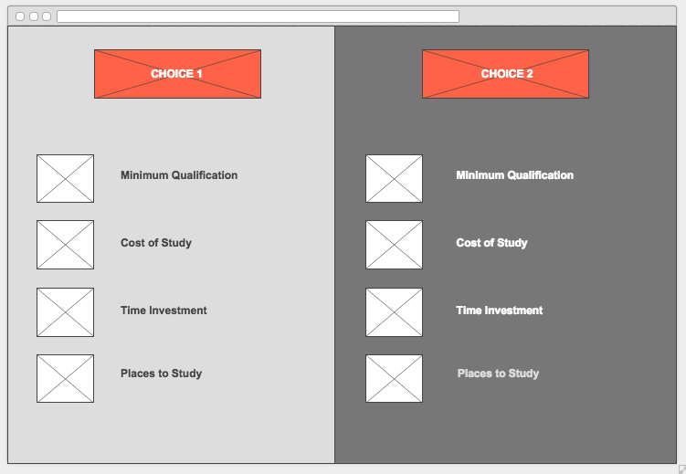
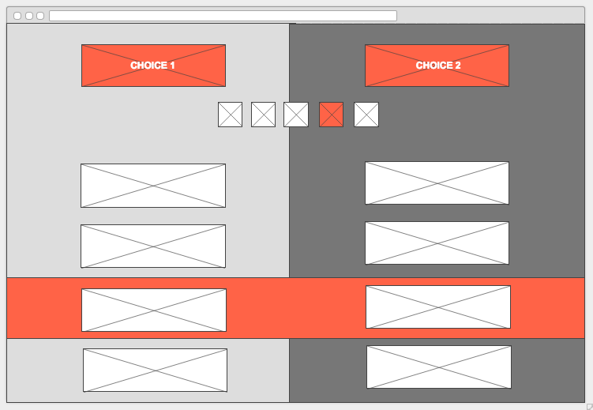
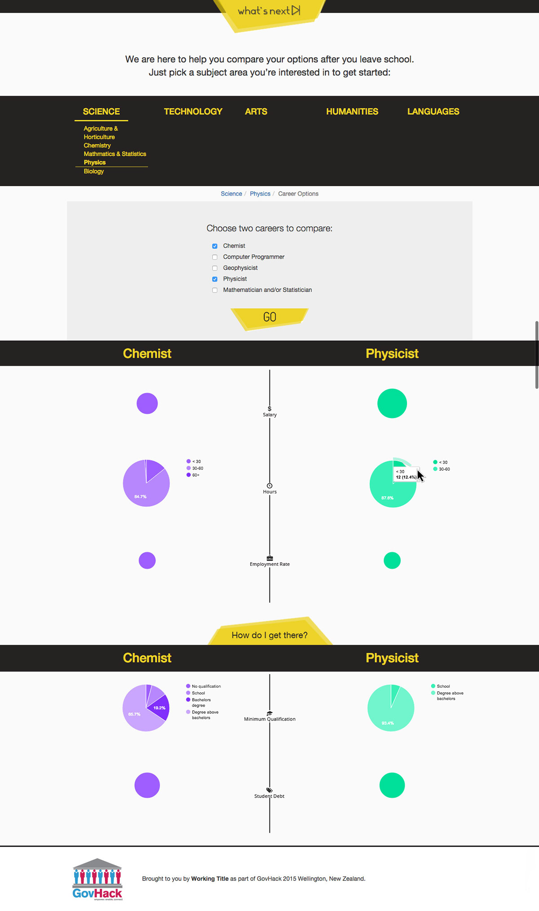
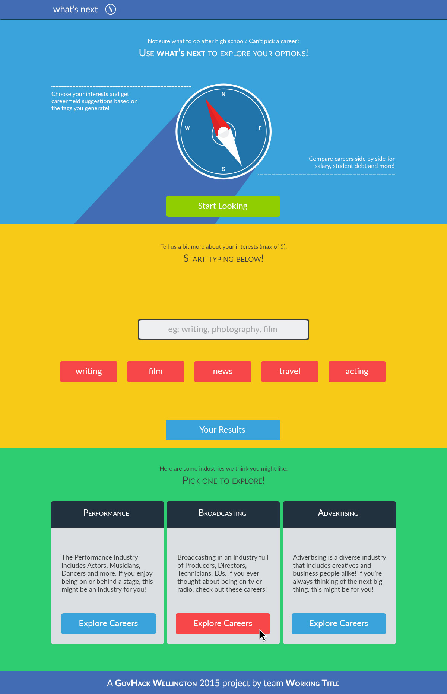
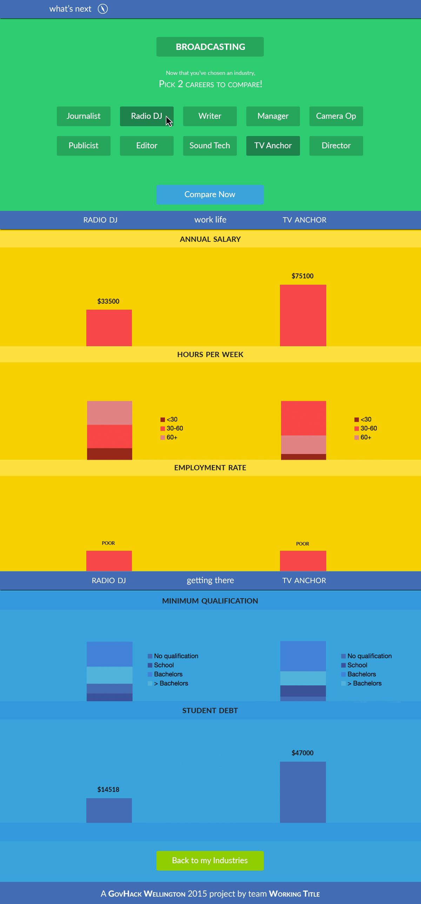
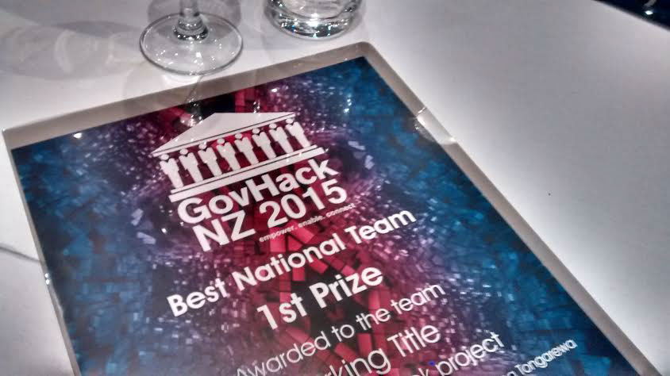

What's Next (GovHack 2015)
GovHack is an annual Hackathon, imported to NZ for its first instalment in 2015 from Australia, with the goal of getting participants to "Innovate and create with Government data".
Over one weekend, hundreds of people from many different sectors of our community came together in their local centers to image new ways to make government data useful and accessible to all. Our team "Working Title" wanted to focus on using statistics about education and employment to help young people make educated choices about what they want to do after they finish high school.
We wanted to extract metrics that really matter — like salary and student loan information, work/life balance and employment rate, and use them to help students make useful comparisons between specific careers they are considering.
I had the pleasure of designing the look and user journey for our web app and working on the CSS for the final product.

The brainstorm: Our idea started with a task most high school students are familiar with, but find very difficult — making a 10 year plan. Many high school career advisors encourage teens to think about their future and imagine where they would like to be in a decade, but this is a daunting and nearly impossible task when there are so many options and uncertainty.

The first wireframe: We thought that a good starting point would be finding out how far through high school the user is. This way, we could create a timeline for them that maps out how many more steps they need to take to get to their dream job.

The previous timeline idea had lots of variables because we had no idea where the person might choose to live or study or what their circumstances are. We decided to focus more on career options themselves and highlight 2 specific jobs a user might be interested in.

One design iteration included icons at the top of the screen, right under the career names, so that the user can jump straight to the area they find most interesting.
Version 1: This was our first completed and functional design that we took to users. It got the job done, but the interface was clunky and the feel was somewhat outdated. Users asked for more colour, more intuitive career selection and a segmentation of the process.
During this time I also attended a data visualisation workshop and realised that comparing circles side by side is incredibly difficult for the human eye, so I had to come up with better ways of presenting the stats to our users.
Current site: After taking user testing outcomes on board, I designed a colourful and modern site that uses a bold, flat user interface and divides the user journey into clear, easy to follow steps. There is a lot more materiality to this site — instead of using school levels and subjects, we moved towards interests, which are graphically represented and interactive. Users can click, select, scroll, type and delete information that's most relevant to them.
Page 2; Career Comparison: After the user selects the industry they like most, they are presented with a range of careers. The industries and careers are using the latest government data and are dynamically generated for each user based on their interests. The data visualisation uses bars and colors to help users compare sizes and sections by height. If a user doesn't find their chosen industry interesting or rewarding, they are free to go back to their three original suggestions without having to enter their interests all over again.
Disclaimer: The data in this mockup may not be accurate; it is for interface demonstration purposes only.

"What's Next" was awarded 1st Prize for "Best National Team" at the recent GovHack Awards Night.
"What's Next" went from being just a few scribbles on a whiteboard to a fully-functional, data-driven, mobile-responsive web app in just 48 hours. We put a lot of love into the project and kept testing and improving it even after the competition finished. We hope one day it helps a whole bunch of teens make their 10 year plan a whole lot less stressful!
This app was developed by kids and adults, students and full-time workers, data wranglers, business analysts and web developers. We were all united by our desire to make the step out of school and into adulthood just a little less scary.
I hope you enjoyed looking at our project as much as we loved working on it!